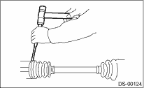
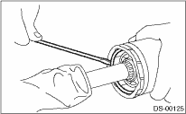
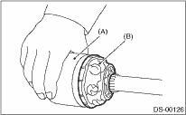

DRIVE SHAFT SYSTEM > Rear Drive Shaft
1. Straighten the bent claw at the larger end of the DOJ boot.
2. Loosen the band by means of a flat tip screwdriver or pliers, being careful not to damage the boot.

3. Remove the boot band on the small end of DOJ boot in the same manner.
4. Remove the larger end of DOJ boot from DOJ outer race.
5. Pry and remove the circlip at the neck of DOJ outer race with a screwdriver.

6. Take out the DOJ outer race from the shaft assembly.
7. Wipe off the grease and take out the ball bearings.
CAUTION:
• The grease is a special grease (grease for constant velocity joints). Do not mix with other greases.
• Disassemble while being careful not to lose ball bearings (6 pcs).

|
(A) |
Outer race |
|
(B) |
Grease |
8. To remove the cage from the inner race, turn the cage by a half pitch to the track groove of the inner race and move the cage.
9. Using pliers, remove the snap ring fixing the inner race to the shaft.
10. Take out the DOJ inner race.
11. Take off the DOJ cage from shaft and remove the DOJ boot.
12. Wrap vinyl tape around the spline part of shaft.
13. Remove the BJ or EBJ boot using the same procedures as for the DOJ boot.
NOTE:
The BJ is a non-disassembly part, so the axle disassembly stops here.